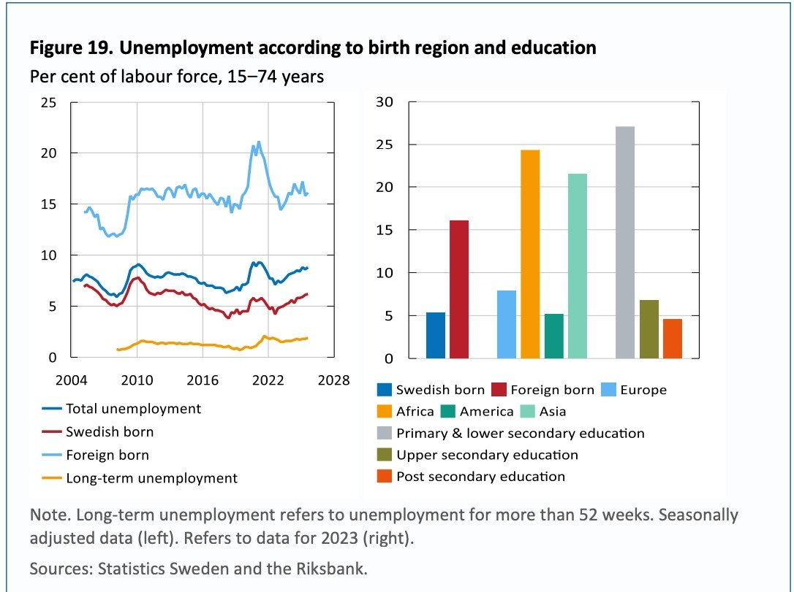

What the Riksbank Says About Structural Unemployment in Sweden
· Francis AwaguI enjoy reading the Monetary Policy Report that the Riksbank's monetary policy department publishes on the day it announces the policy rate. Since moving to Sweden as an economics student working in the tech sector, I have come to treat the analysis from the economists there as a signal of where the economy is heading.
Two things in a recent report stood out to me: a chart on who is unemployed in Sweden, and a short explanation of why so much of that unemployment is structural.
The chart

The left panel shows that unemployment among people born abroad has sat at roughly 15 to 20 per cent for most of the past 15 years, more than double the rate for people born in Sweden. The right panel breaks the 2023 figures down further, and this is what caught my eye. Unemployment is around 24 per cent for people born in Africa and around 27 per cent for people with only primary or lower secondary education. For comparison, it is around 5 per cent for people born in Sweden and under 5 per cent for people with post-secondary education.
The excerpt
The report pairs the chart with this explanation of why these gaps persist regardless of the business cycle:
Most of the unemployment in Sweden is explained by structural factors
Resource utilisation in the economy is important for the shaping of monetary policy, both because it affects wage pressure and inflation, and because the real economy is important in itself. A central part of the analysis of resource utilisation is the assessment of equilibrium unemployment, that is, the part of unemployment that is structural.
The percentage of the population that is either employed or seeking work is high in Sweden. The high level of participation in the workforce also applies to groups where quite a lot of people have difficulty finding jobs regardless of the economic situation. This is reflected in unemployment for certain groups of people, for instance those born abroad and those with a lower level of education being lastingly high. One reason why unemployment is high for certain groups of people born abroad is that a larger percentage lack upper secondary education and most jobs in Sweden require this as a minimum. Many of those born abroad also lack sufficient knowledge of Swedish and the work-related networks needed to enter the labour market, and they are also discriminated against to a greater degree. This means that there are structural explanations for unemployment in these groups. Most analysts agree that the greater part of unemployment in Sweden is structural, and that it therefore primarily requires other types of measure than monetary policy easing to reduce it.
Why this matters
The last sentence is the important one. If most unemployment in Sweden is structural, cutting the policy rate will not do much for the groups in that chart. What moves the needle is upper secondary education, Swedish language skills, professional networks, and less discrimination in hiring. Those are labour market and integration policy questions, not monetary policy questions, and it is useful to see the central bank say so plainly.
Source: Ample spare capacity in the labour market, an analysis in the Riksbank's Monetary Policy Report, December 2025. See also riksbank.se.